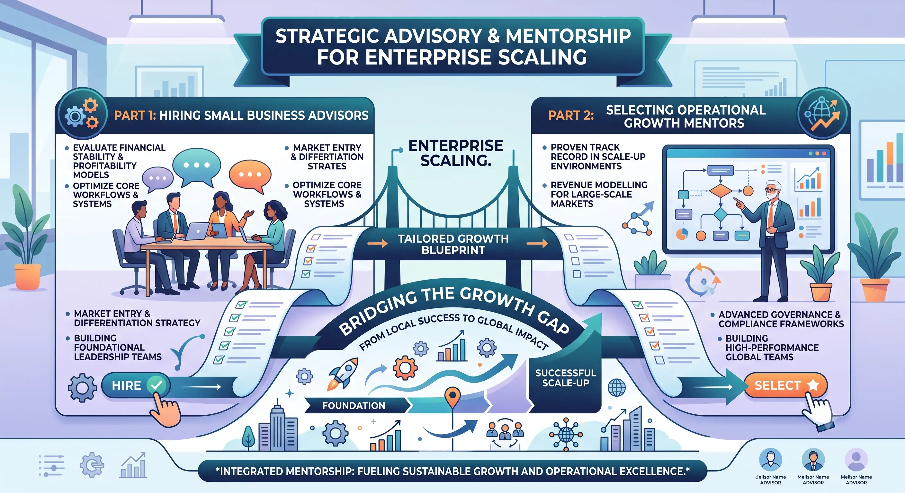
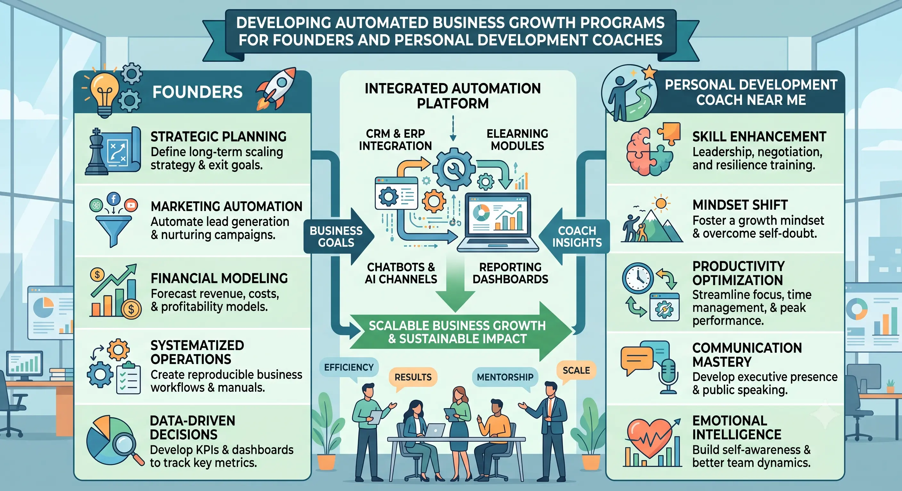

What to Demand When Vetting a Technical Personal Business Growth Coach
The Paradigm Shift in Executive Founder Support
In the volatile, fast-paced landscape of modern commerce, the role of a founder has transitioned from a simple manager of resources to an agile architect of scaling systems. As a result, the demands placed on external advisors have evolved. Traditional business coaching, once dominated by high-level motivational speeches, psychological hand-holding, and general strategic philosophies, is no longer sufficient to keep high-growth organizations competitive. Today's founders require a specialized growth partner who can navigate both the complex mental pressures of leadership and the practical tech stacks of scaling organizations. This is where a technical Personal Growth Coach becomes indispensable.
When founders find themselves struggling to break past revenue plateaus, their first instinct is often to begin Hiring Small Business Advisors. However, without a clear blueprint of what to demand during the vetting process, they frequently select generalists who lack the technical literacy required to design operational pipelines, set up marketing automation, or audit financial models. If your advisor cannot explain the conversion logic of your CRM, map out your digital acquisition paths, or analyze data schemas, they cannot help you scale. The process of selecting operational growth mentors must shift from assessing mere chemistry to evaluating hard, technical capability and systematic execution.
Many founders attempt to solve this problem by conducting local searches, looking for a personal development coach near me to provide face-to-face guidance. While having a local mentor in cities like Madurai offers a sense of connection, physical proximity should never be prioritized over operational capability. The ideal growth partner is one who combines the personal counseling skills of an executive coach with the systems engineering mind of an operations director. By focusing on technical vetting, founders can ensure they are not just buying advice, but are investing in a structured scaling methodology that yields a measurable return.
The Technical Growth Coach vs. Mindset Mentoring
To understand what to demand when vetting an advisor, it is critical to distinguish between a general business mentor and a technical growth coach. General mentors typically focus on soft skills—mindset, motivation, goal-setting, and general business philosophies. While mindset is important, it is only one side of the scaling coin. A technical personal business growth coach operates at the intersection of psychology and systems. They understand that a founder's internal barriers—such as difficulty delegating, micromanagement, or imposter syndrome—manifest directly as bottlenecks in the company's daily operations.
For instance, a founder's fear of losing control might lead to a lack of standardized operating procedures (SOPs) or a refusal to implement automated workflows. A general coach might try to talk the founder through their trust issues. A technical coach, however, addresses both the mindset and the machine: they work with the founder as a Personal Growth Coach to resolve the internal bottleneck while simultaneously auditing the company’s tech stack to build robust, automated delegation systems. This dual approach ensures that personal growth translates immediately into operational efficiency.
This distinction is crucial when reviewing various Business growth programs for founders. Many of these programs are built around generic masterclasses and templates that ignore the specific operational constraints of a business. A technical growth coach does not offer cookie-cutter advice. Instead, they design a custom roadmap that aligns the founder’s personal leadership style with the technical needs of the company. As the business transitions from a small operation to a larger mid-market entity, the coach provides the structured Enterprise Scaling Mentorship required to transition the business from founder-dependent chaos to a self-sustaining system.
Auditing Systems Literacy and Operational Track Record
When vetting potential advisors, the first demand must be for concrete proof of operational literacy. You are not looking for a career coach who has only read about business in textbooks; you need someone who has built, scaled, and operated profitable companies. During the vetting process, ask specific, technical questions. Demand that they explain the architecture of a successful sales funnel they have recently designed. Have them walk you through their process for integrating CRM systems with marketing databases, or how they use data analytics to identify bottlenecks in a customer acquisition pipeline.
Furthermore, a technical mentor must have active ties to high-level corporate consulting networks. These networks represent a valuable repository of resources, partnership opportunities, and specialized talent that the coach can leverage on your behalf. If an advisor operates in a vacuum, without connection to broader industry networks, their capacity to support your enterprise scaling is severely limited. An advisor connected to elite networks can introduce you to strategic partners, venture capitalists, and specialized consultants, accelerating your growth trajectory far beyond what is possible through solo effort.
Therefore, when selecting operational growth mentors, look for those who can demonstrate an active presence in these networks. The vetting process should include an audit of their past client case studies, focusing on the specific systems they implemented. When Hiring Small Business Advisors, you are hiring an architect for your company’s future. If they cannot design a clean technical blueprint for your operations, they are not qualified to guide you. Demand proof of their technical competencies before signing any agreement.
Executive Accountability and Tracking ROI
One of the primary reasons business owners become disillusioned with coaching is the inability to measure its impact. To prevent this, founders must demand a structured framework for tracking business coaching ROI from day one. Coaching should never be viewed as a luxury or a soft expense; it must be treated as a strategic investment with a quantifiable financial return. The ROI framework should calculate the value of founder hours saved through automation, the reduction in customer acquisition costs, the increase in client retention rates, and the expansion of profit margins.
To achieve this, the coaching engagement must be built on a foundation of executive accountability metrics. A technical coach does not rely on vague verbal updates. Instead, they implement tracking dashboards—integrating project management tools like Asana, Jira, or Monday—to monitor the execution of the scaling plan. These metrics track the deployment of automated systems, the velocity of pipeline leads, the completion rates of operational milestones, and the performance of key personnel. This structured approach ensures that the founder remains focused on high-leverage activities and does not slip back into daily firefighting.
This level of structure is what makes a technical Personal Growth Coach so effective. By holding the founder accountable to specific, quantifiable metrics, the coach helps them break free from the operational details and step into a true leadership role. The combination of personal development and structured accountability prevents procrastination and ensures that the business moves forward systematically. When you can see the direct link between coaching sessions, system implementations, and revenue growth, tracking business coaching ROI becomes simple and transparent.
Systems Automation
A technical coach designs and implements automated CRM systems, marketing pipelines, and operational workflows, reducing manual errors and saving hundreds of founder hours.
Measurable Financial ROI
By establishing clear financial benchmarks, you can easily handle tracking business coaching ROI, transforming coaching fees into a high-yielding operational investment.
Rigorous Accountability
The implementation of custom executive accountability metrics ensures that the founder remains focused on long-term scaling milestones rather than daily operational tasks.
Elite Network Access
Leveraging the coach’s position in corporate consulting networks opens doors to strategic joint ventures, executive talent, and venture funding opportunities.

Choosing the Right Scaling Program Structure
As you search for a personal development coach near me or audit global scaling options, you will encounter various coaching structures. These typically fall into three categories: self-paced courses, group masterminds, and bespoke 1-on-1 coaching. While courses and group programs have their place, they often fail to deliver the deep, customized operational audits that high-growth businesses require. A founder who is trying to scale past seven figures cannot rely on a pre-recorded video to solve a complex database synchronization issue or a bottleneck in their sales pipeline.
For high-growth companies, bespoke 1-on-1 coaching is the gold standard. This structure allows the coach to embed themselves in your business, auditing your specific processes, team structures, and technology. This tailored approach is what distinguishes top-tier Business growth programs for founders from mass-market educational products. A custom program provides the space to address both the technical systems of the company and the personal psychology of the leader, ensuring that the scaling roadmap is aligned with the founder's strengths and weaknesses.
When choosing a program, ask how the curriculum is adapted to your industry and tech stack. If the program relies on generic business templates without considering your specific marketing automation platforms or operational tools, it will not deliver the results you need. A technical coach will audit your existing software, identify redundancies, and help you select the right platforms to support your scaling objectives. This hands-on, customized support is what turns a coaching engagement into a successful partnership.
Resolving Mindset Bottlenecks to Enable System Scaling
Every business is a reflection of its founder. Therefore, any operational bottleneck can usually be traced back to a psychological bottleneck in the leader. For example, if a company is struggling to scale its sales because the founder insists on closing every deal themselves, the bottleneck is not just the sales system—it is the founder's fear of delegation or their need for personal validation. A technical coach addresses this by acting as a Personal Growth Coach, helping the founder identify and resolve these underlying mental patterns.
Once the psychological block is addressed, the coach works with the founder to implement the operational solution. Through Enterprise Scaling Mentorship, the founder learns how to design organizational charts, write clear SOPs, and build a middle management team that can run the daily operations. This structured scaling prevents the business from collapsing under its own weight and allows the founder to transition from a daily operator to a strategic owner.
This integrated approach is why selecting operational growth mentors is such a critical decision. The right mentor does not just tell you what to do; they help you grow into the leader who can do it. By tracking progress against specific executive accountability metrics, the coach ensures that the founder is consistently pushing boundaries and executing the growth plan. This combination of mindset development and operational execution is the key to sustainable, long-term scaling.
The Operational Architecture of Scaling
A successful scaling strategy requires a robust operational architecture that can support increased demand without a corresponding increase in overhead. This architecture is built on three pillars: automated lead generation, streamlined sales pipelines, and automated fulfillment workflows. A technical coach helps you design and build these systems, ensuring that your business can handle growth smoothly and efficiently.
When Hiring Small Business Advisors, you must demand that they help you build these operational assets. An advisor who only offers advice and does not help you create tangible assets—such as automated email funnels, standardized sales scripts, or documented operational workflows—is not delivering full value. The goal of the coaching engagement should be to leave your business with permanent systems that continue to generate revenue and save time long after the coaching ends. This asset-focused approach is what drives a positive return on your investment, making tracking business coaching ROI a satisfying and objective exercise.
Furthermore, a technical coach will help you optimize your marketing systems. They will work with you to design high-converting visual assets, set up automated email marketing campaigns, and implement tracking codes to monitor user behavior. This technical support ensures that your marketing budget is spent efficiently and that your lead generation systems are highly optimized. By combining marketing systems with personal coaching, the advisor helps you build a business that is both highly profitable and personally fulfilling.
Modern Marketing Systems
Auditing and deploying automated lead acquisition, CRM workflows, and performance tracking models that scale marketing efficiency.
Enterprise Scaling
Moving from solo-operator bottlenecks to delegated leadership frameworks through structured Enterprise Scaling Mentorship.
Corporate Networks
Leveraging active corporate consulting networks to connect with industry leaders, strategic capital, and joint-venture partners.

Overcoming the Pitfalls of Generic Growth Programs
The marketplace is flooded with generic business development programs that promise rapid growth but deliver little practical value. These programs often rely on high-level concepts and inspirational webinars, leaving founders with no clear steps for implementation. A founder who is struggling with a technical bottleneck—such as poor lead routing or low conversion rates on a sales landing page—cannot solve these issues with generic advice. They need a technical coach who can dive into the data, identify the root cause, and help them fix it.
This is why specialized Business growth programs for founders are so important. A technical growth program is built around individual business audits, technical troubleshooting, and customized implementation plans. The coach acts as a partner who helps you navigate the specific technical challenges of your industry, ensuring that your systems are robust, scalable, and optimized for growth. This hands-on support is what allows founders to build sustainable businesses that are not dependent on their daily presence.
Moreover, if you are looking for a personal development coach near me in Madurai, it is vital to ensure that the coach has experience with modern digital platforms and global business models. Even if they are based locally, their expertise must span international scaling standards, automated marketing pipelines, and modern CRM systems. By choosing a coach who combines local availability with global technical experience, you get the best of both worlds: personal, face-to-face support and world-class scaling systems.
The Long-Term ROI of a Structured Coaching Engagement
Ultimately, the value of a business growth coach is measured by the long-term equity and operational freedom they help you build. The goal of the coaching engagement is to transition you from a self-employed business owner to a true equity holder. This transition requires the creation of systems that can operate independently of your daily labor. A technical coach guides you through this process, helping you build a company that is valuable, scalable, and attractive to potential buyers or investors.
When evaluating your progress, it is critical to focus on tracking business coaching ROI through both financial and operational lenses. Financial ROI is measured by increases in monthly recurring revenue (MRR), higher profit margins, and lower customer acquisition costs. Operational ROI is measured by the number of hours you save each week, the successful delegation of key business tasks, and the peace of mind that comes from knowing your business can run without you. A technical coach will help you track these metrics systematically, ensuring that your investment pays off.
By working with a coach who is connected to active corporate consulting networks, you also gain access to long-term growth opportunities that are not available to the general public. These networks provide opportunities for strategic partnerships, joint ventures, and market expansions, helping you take your business to the next level. In addition, the coach helps you set up long-term executive accountability metrics that keep your team focused and aligned with your vision. This structured support is what turns a small business into a high-value, scalable enterprise.
How to Begin Vetting Your Growth Coach
If you are ready to scale your business, the first step is to begin the vetting process with potential coaches. Prepare a list of specific, technical questions to ask during your consultation call. Demand to see case studies showing how they have helped other founders build automated systems, scale operations, and achieve a positive return on their coaching investment. Avoid coaches who give vague, motivational answers or who cannot explain the technical mechanics of their scaling strategies.
When selecting operational growth mentors, look for those who possess a unique combination of personal development expertise, technical operational knowledge, and access to professional networks. A great coach is a Personal Growth Coach who understands your mind, an operations manager who understands your systems, and a strategic advisor who understands your market. By demand-driven vetting, you can find a partner who will help you scale your business, increase your profits, and achieve your personal goals.
At The PhD Ads in Madurai, we specialize in helping founders navigate these scaling challenges. From directory services for executive coaches and small business advisors to visual asset production, automated lead generation systems, and scaling mentorship, we provide the technical and creative support you need to scale your company. We help you build the systems, create the media, and develop the leadership capacity needed to scale your business to new heights.
Key Topics
Ready to Work with a Growth Coach Who Delivers Measurable Scaling ROI?
At The PhD Ads in Madurai, we provide directory services for executive coaches, scaling mentorship directories, small business advisory services, and visual asset production designed to support your company's growth. Partner with operational mentors who understand how to build systems that automate growth.
Email: team@e2o.in